At a glance
| Booked with | Air Canada Vacations (3 bookings) |
|---|---|
| Resort | Hotel Xcaret Mexico (All-Fun Inclusive) |
| Room | Suite Garden View, one per family |
| Dates | Sat Mar 13 – Sat Mar 20, 2027 |
| Group | 6 adults, 5 kids |
| Home airport | Nanaimo (YCD) via Vancouver |
Photos and fun facts
Scenes from Xcaret Park and the coast right next to the hotel. There are no free-licence photos of the hotel's own suites and pools; see the official gallery at hotelxcaretmexico.com.
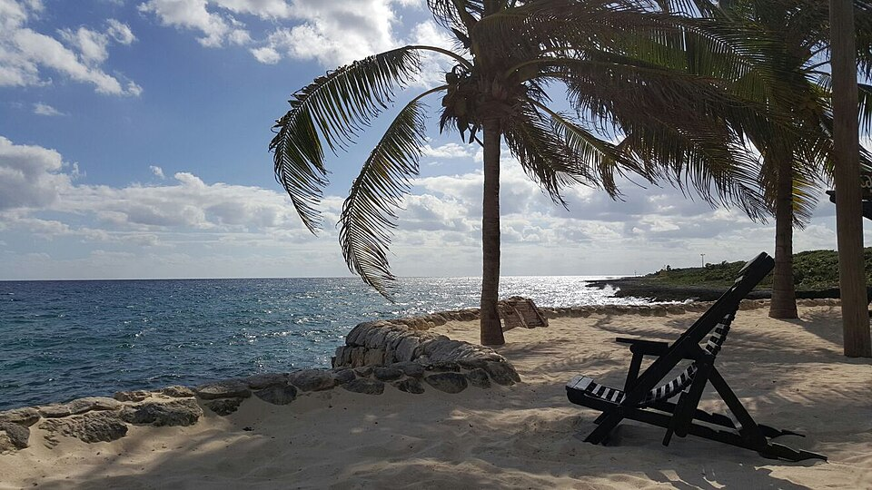
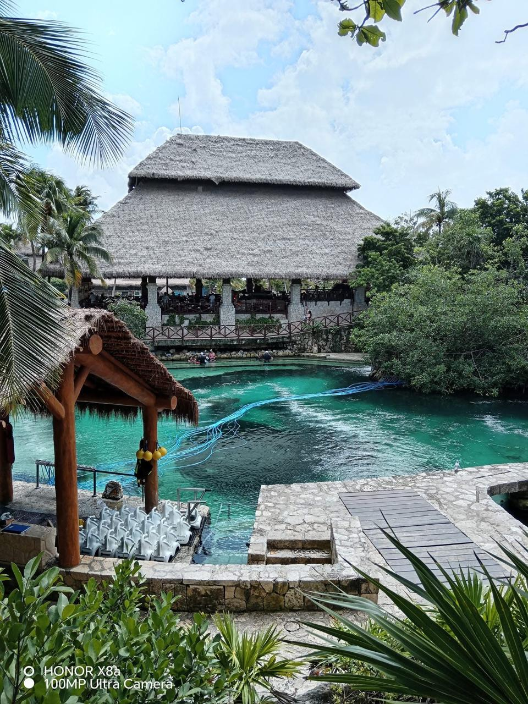
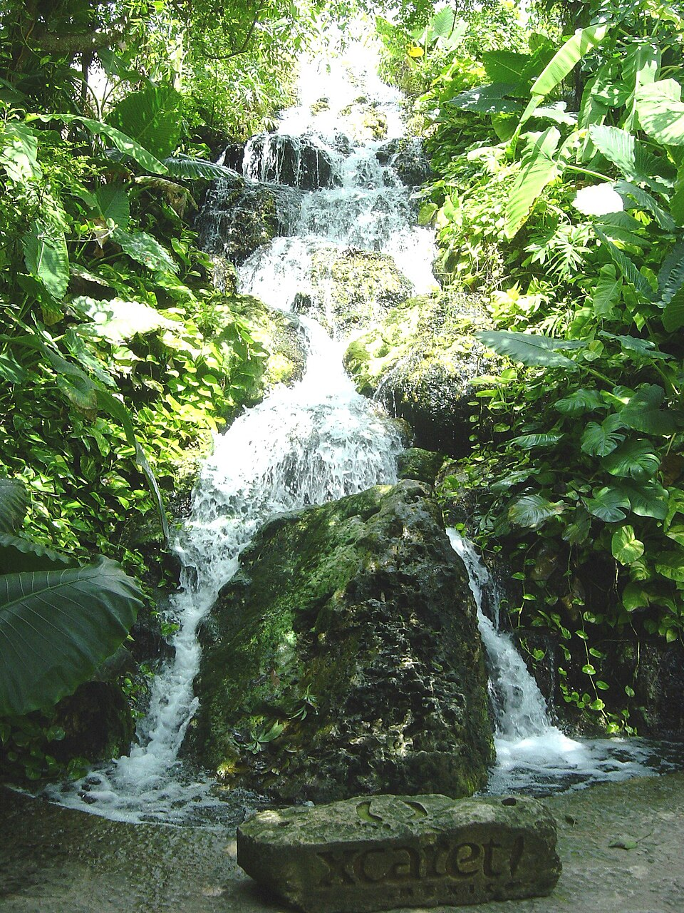
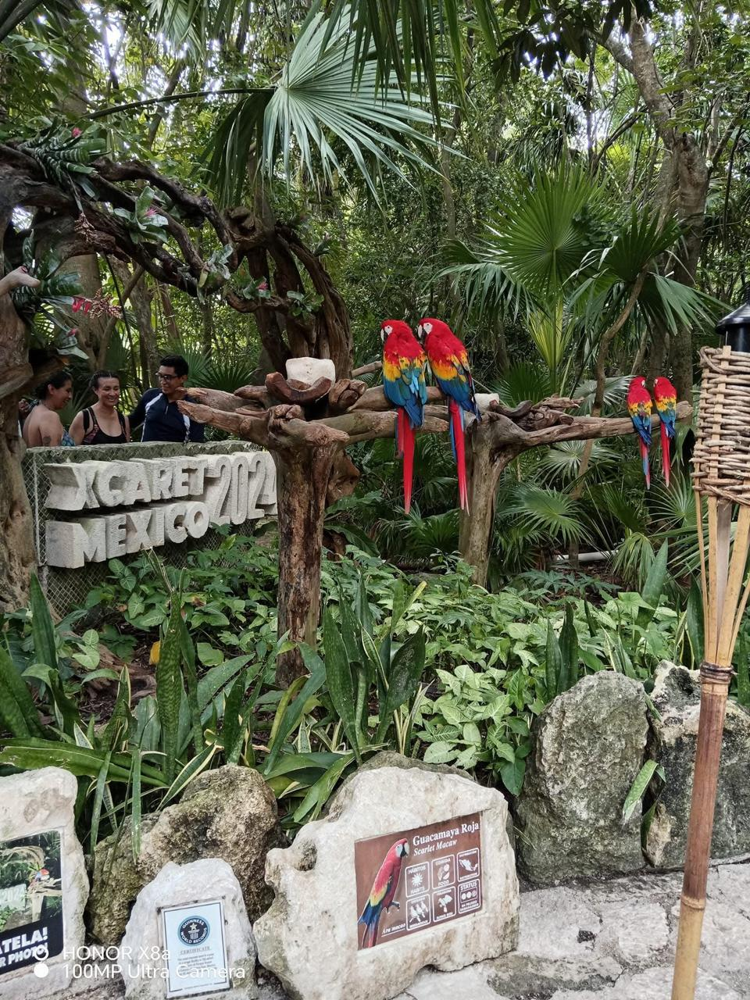
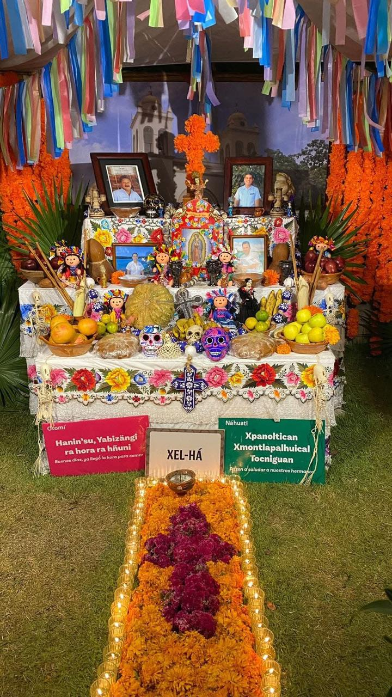
Wildlife to look for
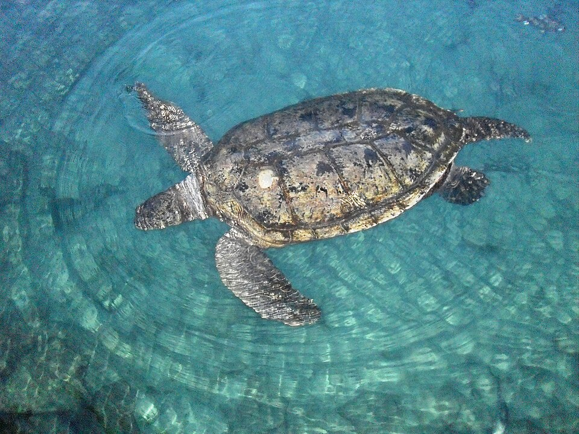
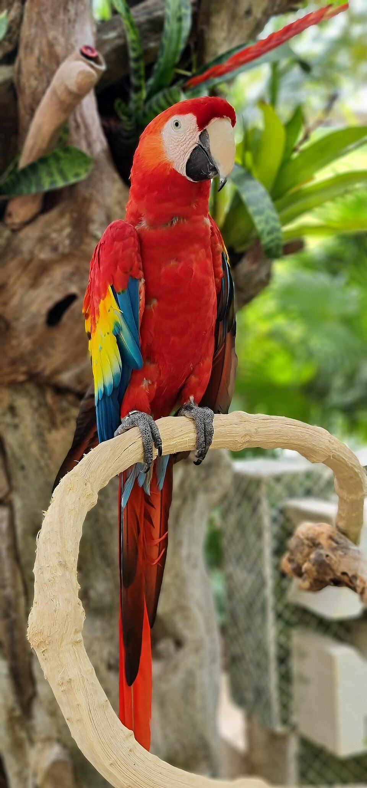
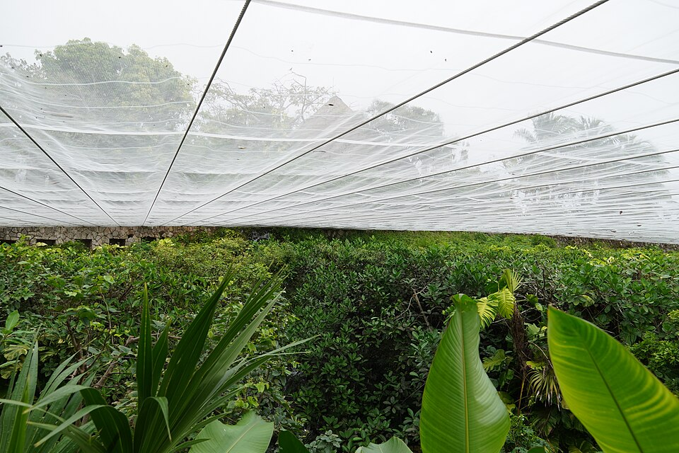
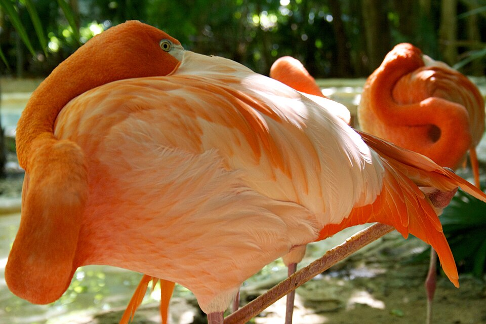
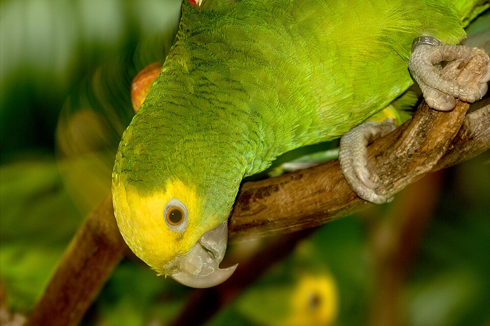
Fun facts
The hotel is built between the jungle and the Caribbean, with suites that look out over the sea, rivers or coves. It celebrates Mexican craftsmanship and culture.
Source
After the 2025 expansion the hotel has about 1,800 rooms (up from 900), 16 pools, five waterslides and 20+ restaurants.
Source
EarthCheck Gold certified (2024). Grupo Xcaret runs more than 5,000 solar panels and has reforested over 275,000 native plants.
Source
Rooms are grouped into buildings called Casas, such as Tierra, Viento, Espiral, Agua and Fuego, each named after an element.
Source
Who's going
Parker family
William, Katrina, Charlie (child), Grayson (child)Bunt family
Kristi, Bradley, Emilie, Alexandra John (child)John / Bereta family
Jennifer John, Jesse Bereta, Zylerrouqu Bereta (child)Flights (everyone together, local times)
| Date | Flight | Route | Departs | Arrives |
|---|---|---|---|---|
| Sat Mar 13 | AC8028 | Nanaimo → Vancouver | 07:25 | 08:00 |
| Sat Mar 13 | AC1314 | Vancouver → Cancun | 09:15 | 16:55 |
| Sat Mar 20 | AC1317 | Cancun → Vancouver | 17:35 | 21:55 |
| Sun Mar 21 | AC8027 | Vancouver → Nanaimo | 08:05 | 08:35 |
Airport to resort
Transfers are included twice: the Air Canada Vacations package has a round-trip shared transfer (run locally by W2M), and Hotel Xcaret's All-Fun Inclusive includes a Cancun airport shuttle. Use the Air Canada Vacations transfer; the hotel shuttle is the backup.
- Land Sat Mar 13, 16:55. Air Canada usually uses Terminal 4 at CUN (check your boarding pass). Immigration → bags → customs.
- Walk straight through the arrivals hall, past the timeshare and taxi sellers, until you're outside.
- Find the Air Canada Vacations / W2M reps outside with signs and a name list. They'll send you to the Hotel Xcaret van. Wait until all 11 are together.
- About 1 hour to the hotel. Your wristbands at check-in give park access right away.
- Backup: the hotel's shared shuttle needs no reservation: every 30 min 9:00–17:00, then hourly.
Going home: by Thu Mar 18 (48 h before), confirm the pickup time at w2m.link/aircanadavacations (name, flight AC1317, hotel) or ask the W2M rep at the hotel. Expect pickup around 13:30–14:00 on Sat Mar 20.
Day by day Suggested · to be decided
| Sat 13 | Arrive, check in, easy walk-in dinner |
| Sun 14 | Xcaret Park all day (next door, no booking), stay for the evening show |
| Mon 15 | Pool and beach day, kids' clubs and waterslides |
| Tue 16 | Xenses in the morning, then Xoxi for the adults (Xel-Ha is closed Tuesdays) |
| Wed 17 | Xel-Ha all day (book with concierge) |
| Thu 18 | Rest, or Xenotes / Isla Mujeres ferry · confirm the return transfer |
| Fri 19 | Xplor (or Xplor Fuego at night for older kids), then a group farewell dinner |
| Sat 20 | Pool in the morning, check out, transfer, fly 17:35 |
Parks and activities
Included with All-Fun Inclusive: Xcaret, Xel-Ha, Xplor, Xplor Fuego, Xoxi, Xenses, Xenotes and the Xailing ferry, plus transport from the hotel.
- Xcaret Park: next door, shuttle every 20–30 min. Daily 8:30–22:00.
- Xenses: sensory trail, great for kids. Mon/Tue/Thu/Fri/Sat.
- Xplor: ziplines, amphibious vehicles, cave rivers. Mon–Sat 9–17. Kids must meet minimum age and height rules.
- Xplor Fuego: night version of Xplor. Mon/Tue/Wed/Fri/Sat 17:30–23:00.
- Xel-Ha: snorkelling inlet and lazy river. Closed Tuesdays.
- Xoxi (Xoximilco): fiesta on boats with dinner, Tue–Sat evenings. Has an open bar, so best for adults.
- Xenotes: four cenotes, about 6 h, Mon–Sat morning pickup.
- Xailing ferry to Isla Mujeres.
- Xavage, Xichen (Chichen Itza) and other tours aren't on the current included list. Ask the concierge.
- Dolphin swims, spa extras and photos are add-ons.
Book Xel-Ha, Xoxi and Xenotes for all 11 with the Guest Service Manager on arrival day. Bring each child's age and height. Check hours the day before.
Dinner reservations To be decided
| Restaurant | Notes | Reservation |
|---|---|---|
| Arriba Baja | Baja California cuisine, ages 13+ only | Required |
| HA' | MICHELIN-starred, adults only, not included in the plan | Required |
| Most others | Buffet, market and family restaurants | Walk-in |
- Book one or two group dinners for 11 through pre-arrival guest services or the Guest Service Manager on Sat 13.
- Adults' night idea: Xoxi or HA' while kids are at the Xiquit Inn kids' club (ages 5–9).
- Dinner dress code is smart casual. Men need long pants and closed shoes.
All restaurants at Hotel Xcaret Mexico
All 20 restaurants. Official info is on the hotel's gastronomy page. Review links go to TripAdvisor where a page exists, otherwise to an independent 2026 guide. Also see the hotel's TripAdvisor reviews. Hotel Xcaret Arte (16+ for stays) isn't listed, but the official site says Hotel Xcaret Mexico guests can also eat at Arte's restaurants, with an extra charge at the signature ones. Ask the concierge.
Contemporary Mexican, MICHELIN star
Reservation: Yes, pre-booked · Adults only; not included in plan
Reviews (tripadvisor)
Mexican tasting menu with live show
Reservation: Yes · All ages
Reviews (mesanotes guide)
Japanese: teppanyaki, robata, omakase
Reservation: Yes · All ages
Reviews (tripadvisor)
Pan-Asian: sushi train, teppanyaki, ramen
Reservation: Yes · All ages
Reviews (mesanotes guide)
Mexican churrascaria + buffet; Sunday brunch
Reservation: Yes (dinner, brunch) · All ages
Reviews (mesanotes guide)
Puebla cuisine
Reservation: Yes · All ages, good for kids
Reviews (mesanotes guide)
Mexican street food, 10 stations
Reservation: No · All ages
Reviews (mesanotes guide)
Mexican and international buffet
Reservation: No · All ages
Reviews (mesanotes guide)
Family buffet, Mexican sweets
Reservation: No · All ages, family-focused
Reviews (mesanotes guide)
Mexican urban snacks by the slide pool
Reservation: No · All ages
Reviews (mesanotes guide)
Casual comfort food by the coves
Reservation: No · All ages
Reviews (mesanotes guide)
Oaxacan cantina, live music
Reservation: No · All ages; bar atmosphere at night
Reviews (mesanotes guide)
Reservations: reservaciones@hotelxcaret.com · 1 855 272 9804. Rules can change; confirm when booking.
All Xcaret parks and tours
Next door. Underground rivers, aquarium, aviary, butterfly pavilion, Mayan village, nightly Xcaret México Espectacular show
Kids: Great for all ages; under 4 free entry
Open daily · Booking: No
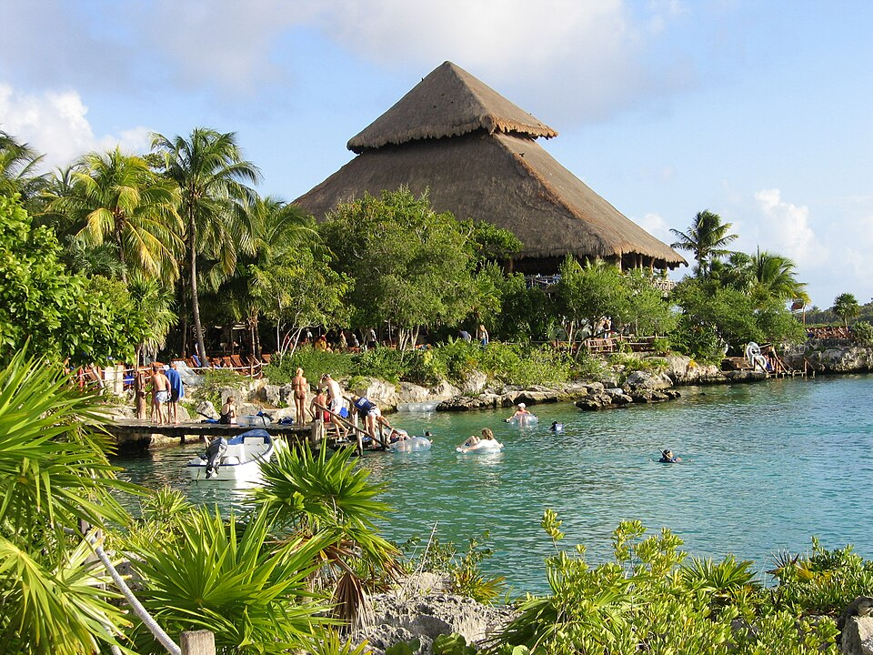
Snorkelling inlet, lazy river, lighthouse slide, kids' playground
Kids: Great for all ages; life jackets provided
Closed Tuesdays · Booking: Yes, concierge
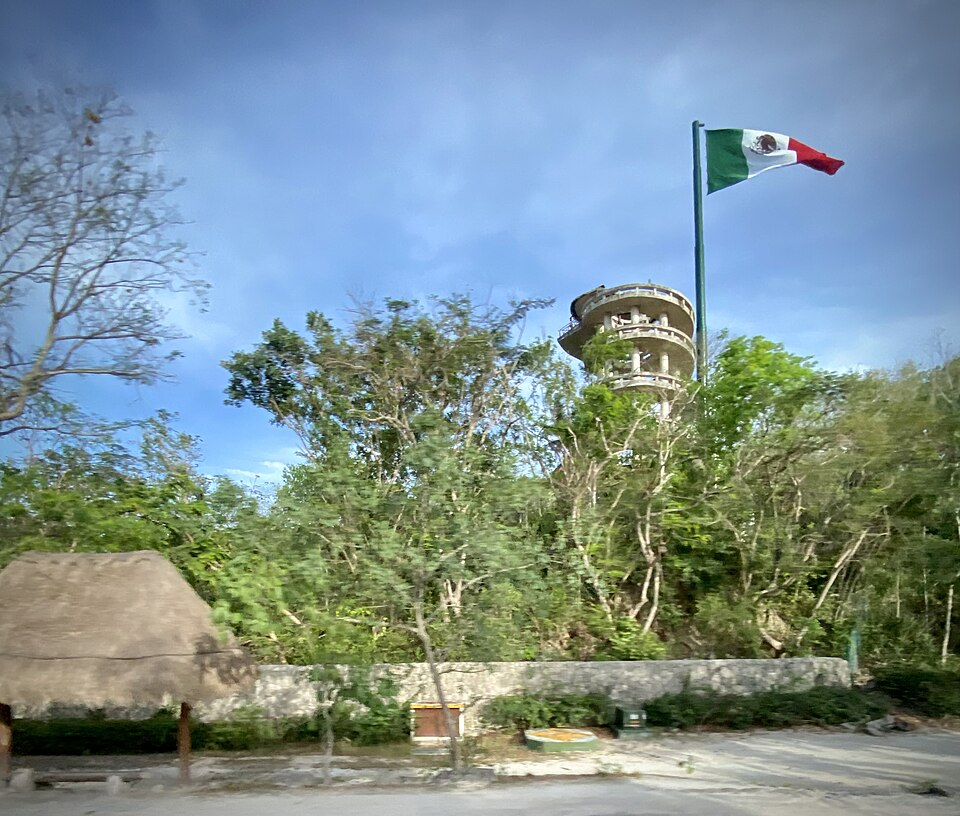
Ziplines, amphibious vehicles, cave river swim and rafts
Kids: Age 5+; most activities 1.0-1.1 m min; ziplines 1.10 m and 40 kg min
Closed Sundays · Booking: No
Night version of Xplor with BBQ dinner
Kids: Age 5+; ziplines 1.10 m and 40 kg min
Closed Thu and Sun · Booking: No
Sensory trail, illusion town, mud river, slide
Kids: Recommended 5+; Slip and Bird Flight need 1.27 m and swimmers
Closed Wed and Sun · Booking: No
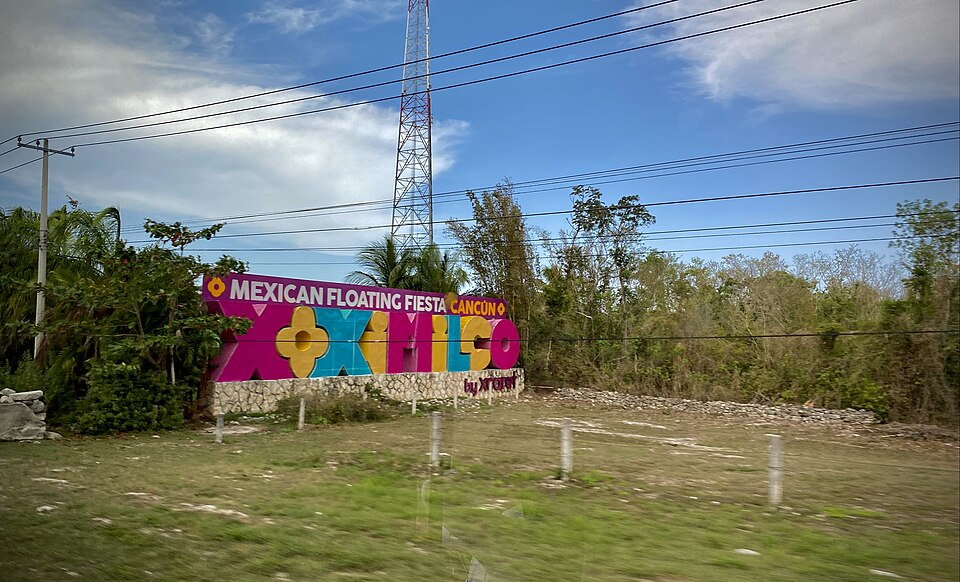
Evening fiesta on boats with dinner and mariachi
Kids: Open bar; best as adults' night
Closed Sun and Mon · Booking: Yes, concierge
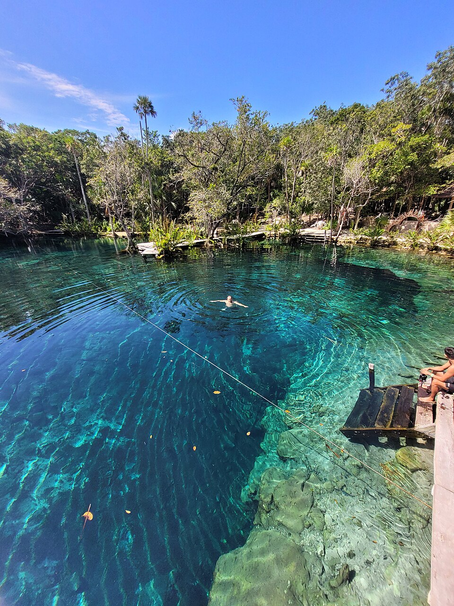
Tour of 4 cenotes: rappel, kayak, ziplines, picnic
Kids: Kids OK with swimming; life jackets used
Closed Sundays · Booking: Yes, concierge
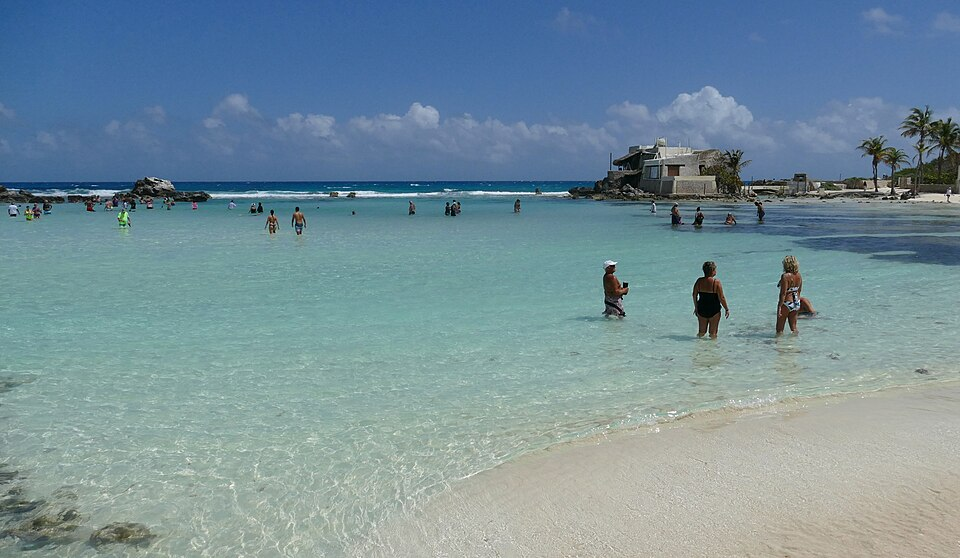
Ferry to Isla Mujeres (and Cozumel)
Kids: All ages
Daily · Booking: Yes, concierge
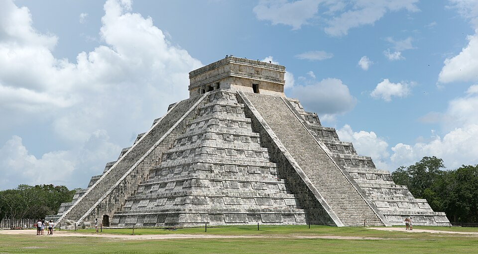
Full-day guided ruins tour with cenote swim (Clásico or Deluxe)
Kids: Long day, 9-12 h; older kids
Closed Sundays · Booking: Yes
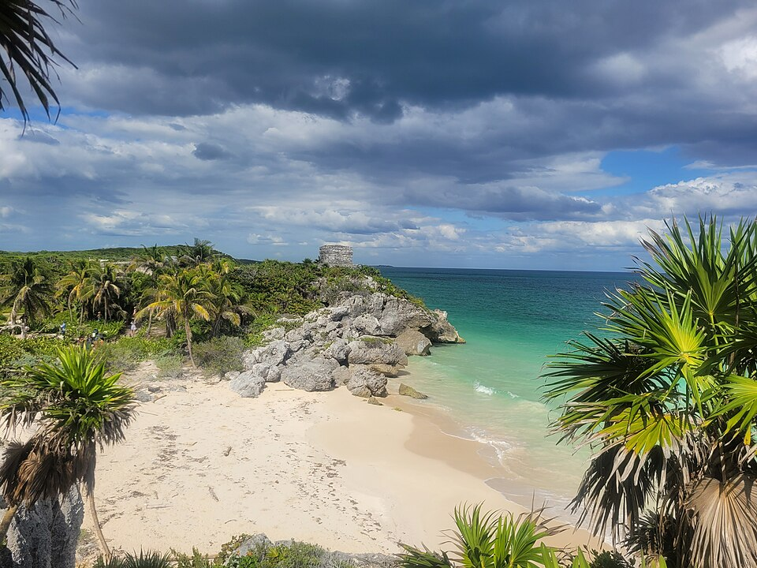
Guided Tulum ruins then Xel-Há
Kids: Family friendly
Closed Tuesdays · Booking: Yes
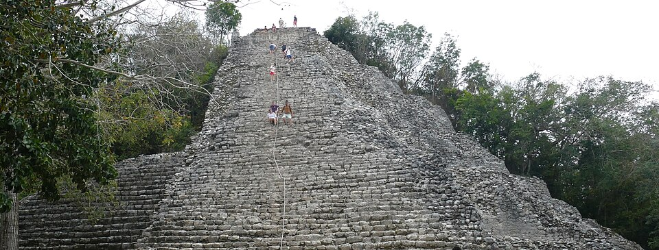
Climb Cobá's pyramid, Tulum, then Xel-Há
Kids: Long day; older kids
Closed Tuesdays · Booking: Yes
Rafting, monster trucks, jet boat
Kids: Closed since Nov 2024; no reopening announced
Closed · Booking: n/a
Names link to official sites (Xavage links to TripAdvisor; closed since Nov 2024). Xenses Insomnia is seasonal. Hours change; check the day before.
Vancouver overnight, Sat Mar 20
NOT YET BOOKED. We land at YVR at 21:55 and fly to Nanaimo at 08:05. The proposed hotel is Fairmont Vancouver Airport, inside the terminal.
- Clear Canada Customs, collect bags in the Level 2 Customs Hall, and exit arrivals.
- Take the elevator up to Level 3 Departures, turn right, and follow signs to USA Departures.
- Walk through the USA Departures hall. The Fairmont entrance is on the right (stairs, escalator or elevator), about a 5–10 min walk.
- In the morning, it's a few minutes' walk back to domestic check-in. AC8027 leaves from a Canada gate (A/B/C). Be at check-in by about 06:45.
| Rooms | Suggested 3–4 rooms, one per family, on the same floor |
|---|---|
| Check-in | Late arrival around 22:45. Tell the hotel when booking. |
| Phone | +1 604 207 5200 |
| vancouverairport@fairmont.com | |
| Web | fairmont.com |
Contacts
| Organizer | Will Parker |
|---|---|
| Air Canada Vacations | 1 866 529-2079 |
| Hotel | hotelxcaretmexico.com |
Sources: hotelxcaretmexico.com (All-Fun Inclusive, FAQ, restaurants, kids), fairmont.com, yvr.ca. Status as of Oct 25, 2026.